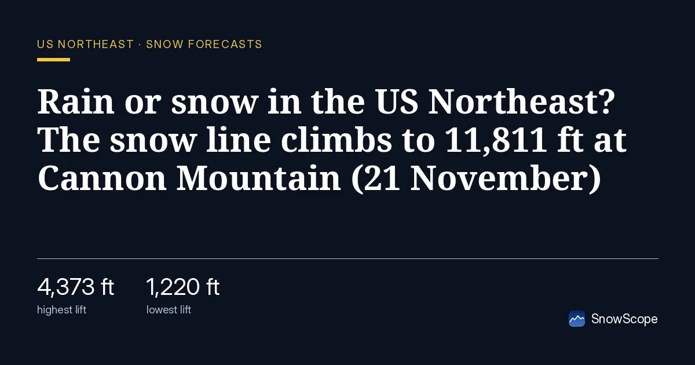
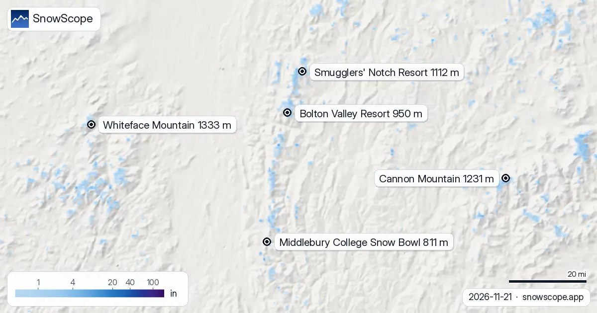

Rain or snow in the US Northeast? The snow line climbs to 11,811 ft at Cannon Mountain (21 November)
The forecast keeps the 0 °C level in the US Northeast between 0 ft (0 m) and 12,861 ft (3,920 m) for the next days. The snow line, about 984 ft (300 m) lower, peaks at 11,811 ft (3,600 m) at Cannon Mountain on Saturday 21 November. Confidence: good for the trend, lower for any single number.
See the live snow forecast for Whiteface Mountain in the SnowScope appSnow depth, powder alerts and the 3D map, free.
The 0 °C level, daily
The 0 °C level at the resorts below, from the coldest to the warmest hour of each day: Saturday 21 November: from 11,089 ft (3,380 m) to 12,861 ft (3,920 m). Sunday 22 November: from 7,251 ft (2,210 m) to 12,861 ft (3,920 m). Monday 23 November: from 164 ft (50 m) to 11,516 ft (3,510 m). Tuesday 24 November: from 0 ft (0 m) to 656 ft (200 m).
| Resort | Snow depth | New snow, 72 h | Coming, next days | Top |
|---|---|---|---|---|
| Whiteface Mountain | 2 in (5 cm) | 0 in (0 cm) | 0 in (0 cm) | 4,373 ft (1,333 m) |
| Cannon Mountain | 7 in (18 cm) | 0 in (0 cm) | 0 in (0 cm) | 4,039 ft (1,231 m) |
| Smugglers' Notch Resort | 6 in (14 cm) | 0 in (0 cm) | 0 in (0 cm) | 3,648 ft (1,112 m) |
| Bolton Valley Resort | 4 in (11 cm) | 0 in (0 cm) | 0 in (0 cm) | 3,117 ft (950 m) |
| Middlebury College Snow Bowl | 5 in (12 cm) | 0 in (0 cm) | 0 in (0 cm) | 2,661 ft (811 m) |

Snow line by resort
Whiteface Mountain, base 1,220 ft (372 m), top 4,373 ft (1,333 m): snow line near 11,483 ft (3,500 m) on 21 November, over the top of the lifts; rain or wet snow everywhere if anything falls.
Cannon Mountain (base 1,883 ft (574 m), top 4,039 ft (1,231 m)): snow line about 11,811 ft (3,600 m) on 21 November, above the top. The whole mountain is in the rain-or-wet-snow zone if precipitation falls.
Smugglers' Notch Resort, base 1,115 ft (340 m), top 3,648 ft (1,112 m): snow line near 11,811 ft (3,600 m) on 21 November, over the top of the lifts; rain or wet snow everywhere if anything falls.
Bolton Valley Resort (base 1,558 ft (475 m), top 3,117 ft (950 m)): snow line about 10,499 ft (3,200 m) on 21 November, above the top. The whole mountain is in the rain-or-wet-snow zone if precipitation falls.
Middlebury College Snow Bowl, base 1,709 ft (521 m), top 2,661 ft (811 m): snow line near 11,483 ft (3,500 m) on 21 November, over the top of the lifts; rain or wet snow everywhere if anything falls.
Rain-on-snow risk
Rain-on-snow risk in the next days: none that we can see. The snow line stays low enough on the wet days.
Tug Hill (1,706 ft (520 m)): 6 mm forecast, snow line near 1,542 ft (470 m) while it falls.
The forecast gives Stowe (4,393 ft (1,339 m)) 16 mm of precipitation, with the snow line near 3,806 ft (1,160 m) during the wet hours.
The 0 °C level and the snow line, briefly
Air cools with height, as a rule. Below the 0 °C level flakes begin to melt; melting is slow, so rain starts only some 984 ft (300 m) lower. That is the snow line. Dry air cools the snow by evaporation and pushes the line lower still.
Tips for skiers
- When it is warm, the morning on high, north-facing slopes gives the best snow, before it softens.
- Do not plan on the 0 °C level to the metre: it can move by several hundred metres, so check the map the day before.
- Before any off-piste or touring day, read the official avalanche bulletin (links below).
- Snow on the map does not mean a resort is open: check lifts and dates on the resort's website.
About these numbers
Resort snow depths are the deepest snow on the resort's upper slopes on the date shown; they are estimates for an area, not a measurement at one point. Forecasts can change. Always read the official avalanche bulletin before going off-piste.
Official avalanche bulletins: Mount Washington Avalanche Center
Cite this report
For research, teaching or the press: the numbers and charts are free to reuse under CC BY 4.0 with this citation.
SnowScope (2026), Rain or snow in the US Northeast? The snow line climbs to 11,811 ft at Cannon Mountain (21 November), https://snowscope.app/blog/en/2026/11/us-northeast-freezing-level-snow-line-21-november-2026.html, accessed 2026-11-21
SnowScope (Atlas Labs). (2026, November 21). Rain or snow in the US Northeast? The snow line climbs to 11,811 ft at Cannon Mountain (21 November). SnowScope snow reports. https://snowscope.app/blog/en/2026/11/us-northeast-freezing-level-snow-line-21-november-2026.html
BibTeX
@misc{snowscope2026usnortheastfreezinglevel,
author = {{SnowScope (Atlas Labs)}},
title = {Rain or snow in the US Northeast? The snow line climbs to 11,811 ft at Cannon Mountain (21 November)},
year = {2026},
month = nov,
howpublished = {\url{https://snowscope.app/blog/en/2026/11/us-northeast-freezing-level-snow-line-21-november-2026.html}},
note = {Published 2026-11-22 10:03 UTC; accessed 2026-11-21}
}· CC BY 4.0 · Methods, data and tools →
Whiteface Mountain: snow and temperature by height, this winter vs last (tools) →
Follow Whiteface Mountain
Free: a message when fresh snow is coming, and the forecast every morning.
More snow reports

Magic Mountain Ski Area in southern Vermont sits on thin natural snow. Peak depths at the base are 21 in (54 cm); at the top, 26 in (67 cm). Data from 46 past winters, November 2026.

Wildcat Mountain forecast to gain 56 cm over 14 days. Week one (23–29 Nov) brings 29 cm, with 22 cm falling on 27 November. Data from 22 November.

Rain threatens upper slopes at Saddleback Mountain where 20 cm sits at 1,218 m. Freezing level rises to 3,760 m today, 22 November.